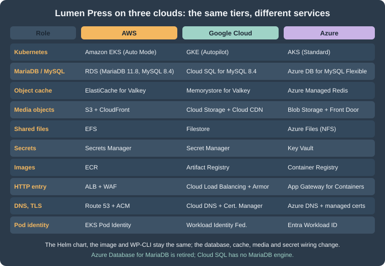

Google Cloud, Azure and Alternatives to Kubernetes
|
This content was generated with the assistance of AI and should be verified against the official documentation before being relied on in production. |
This page was written against WordPress 7.1.3 (7.1.4, the security release of 2026-10-28, is the version to run in
production), PHP 8.4, WP-CLI 2.12.0, Kubernetes 1.36 and 1.37, MySQL 8.4 on Cloud SQL and on Azure Database for MySQL
Flexible Server, Memorystore for Valkey 9.x and Azure Managed Redis. It was checked on 2026-10-29. The Kubernetes manifests
were validated against the Kubernetes 1.36 schemas with kubeconform (custom resources of Gateway API, External Secrets
and GKE were checked for syntax only, because their schemas are not part of Kubernetes), the shell with shellcheck, the
JSON with a parser and the OpenTofu with tofu validate. No cloud account was used: the gcloud and az commands are
composed from the Google Cloud and Azure pages of this site and the vendors' documentation and have not been run, so
verify each flag with --help on the CLI version you install.
The Cloud Deployment section builds one architecture on AWS: Lumen Press on EKS, with the database in RDS, the object cache in ElastiCache for Valkey, media in S3, secrets in Secrets Manager (see Cloud Reference Architecture and Deploying on EKS with Helm). Nothing in that design is specific to AWS except the services that fill each tier. This page maps the tiers to Google Cloud and Azure, shows the commands and manifests that differ, and then compares the alternatives that do not use Kubernetes at all. The shared fundamentals are on the cloud pages of this site, linked where they apply: GKE Clusters, Cloud SQL, AKS Clusters and PostgreSQL and MySQL on Azure.

What stays the same, what changes
The container image, the Helm chart (Deployment lumenpress-web with Nginx and PHP-FPM, CronJob lumenpress-cron, the
pre-upgrade Job lumenpress-migrate, the first-install Job lumenpress-install), wp-config.php reading its settings
from the environment, WP-CLI, the release pipeline shape and the autoscaling logic of
Releases, Upgrades and Autoscaling on Kubernetes
are the same on every conformant Kubernetes. What changes is in five places:
-
How pods get cloud credentials: EKS Pod Identity on AWS, Workload Identity Federation for GKE on Google Cloud, Microsoft Entra Workload ID on Azure.
-
How WordPress reaches the database: a private address with TLS on AWS and Azure, the Cloud SQL Auth Proxy (or private IP) on Google Cloud.
-
Which object cache and with which authentication: ElastiCache for Valkey, Memorystore for Valkey, Azure Managed Redis.
-
Where media goes: S3, Cloud Storage or Blob Storage, or a shared file system (EFS, Filestore, Azure Files).
-
The HTTP entry: AWS Load Balancer Controller, GKE Gateway, or an Azure gateway.
Two facts about databases limit the choice. Cloud SQL offers MySQL, PostgreSQL and SQL Server, so there is no MariaDB
engine on Google Cloud. Azure Database for MariaDB was retired on 2025-09-19 (creation of new servers had stopped in
March 2024) and is not an option; Microsoft’s migration path is Azure Database for MySQL Flexible Server. A WordPress site
whose source database is MariaDB therefore moves to MySQL 8.4 on both clouds, and the dump has to be checked for
MariaDB-only features. The one that matters most: MariaDB 11.4 and later can create tables with the collation
utf8mb4_uca1400_ai_ci, which MySQL does not know, so check information_schema.TABLES.TABLE_COLLATION on the source and
convert to utf8mb4_unicode_520_ci (the WordPress default for new installs on MySQL) before the export. Details of the
migration are on Migrating from a Single Server.
Google Cloud: GKE, Cloud SQL, Memorystore and Cloud Storage
| Tier | AWS (the reference) | Google Cloud |
|---|---|---|
Cluster |
EKS Auto Mode, |
GKE Autopilot (or Standard) regional cluster |
Database |
RDS for MariaDB 11.8 or MySQL 8.4, Multi-AZ |
Cloud SQL for MySQL 8.4 ( |
Cache |
ElastiCache for Valkey |
Memorystore for Valkey (Private Service Connect endpoint) |
Media |
S3 |
Cloud Storage bucket |
Secrets |
Secrets Manager + external-secrets |
Secret Manager + external-secrets, or the GKE Secret Manager add-on |
Image registry |
ECR |
Artifact Registry repository |
Entry |
ALB through the AWS Load Balancer Controller |
GKE Gateway |
Pod credentials |
EKS Pod Identity |
Workload Identity Federation for GKE (IAM principal bound to the Kubernetes ServiceAccount) |
The cluster
An Autopilot cluster removes node management, enables Workload Identity Federation for GKE and the Filestore CSI driver by default, and charges per pod request; a Standard cluster keeps node pools under your control. Autopilot is the closest equivalent of EKS Auto Mode. The cluster commands are on GKE Clusters; the only WordPress-specific decision is that PHP-FPM pods need CPU and memory requests equal to what the HPA measures against, which Autopilot also requires.
#!/usr/bin/env bash
set -euo pipefail
REGION=europe-west1
gcloud services enable container.googleapis.com artifactregistry.googleapis.com \
sqladmin.googleapis.com secretmanager.googleapis.com memorystore.googleapis.com
gcloud artifacts repositories create lumenpress \
--repository-format=docker --location="$REGION"
gcloud container clusters create-auto lumenpress-prod \
--location="$REGION" \
--release-channel=regular
gcloud container clusters get-credentials lumenpress-prod --location="$REGION"
kubectl create namespace lumenpressThe image is pushed to europe-west1-docker.pkg.dev/<project-id>/lumenpress/wordpress:<git-sha>. The GitHub Actions
workflow of the release page changes in two lines: the OIDC step uses google-github-actions/auth with Workload Identity
Federation for the pool and provider (see Identity and Access) instead of
aws-actions/configure-aws-credentials, and the cluster login is gcloud container clusters get-credentials. The helm upgrade --rollback-on-failure step is identical.
Cloud SQL for MySQL
Cloud SQL runs MySQL 8.4 (the default version at the check date; 9.7 is available but WordPress and its plugins are
tested against 8.x) with a primary and a standby in two zones when --availability-type=REGIONAL, a private address
through private services access, point-in-time recovery from the binary log, and automatic storage growth.
#!/usr/bin/env bash
set -euo pipefail
PROJECT_ID="$(gcloud config get-value project)"
REGION=europe-west1
NETWORK=default
gcloud sql instances create lumenpress-prod \
--database-version=MYSQL_8_4 \
--edition=ENTERPRISE \
--tier=db-custom-2-7680 \
--region="$REGION" \
--availability-type=REGIONAL \
--network="projects/$PROJECT_ID/global/networks/$NETWORK" \
--no-assign-ip \
--ssl-mode=ENCRYPTED_ONLY \
--storage-type=SSD --storage-size=100GB --storage-auto-increase \
--enable-bin-log \
--retained-backups-count=14 --retained-transaction-log-days=7 \
--backup-start-time=03:00 \
--deletion-protection
gcloud sql databases create lumenpress \
--instance=lumenpress-prod \
--charset=utf8mb4 --collation=utf8mb4_unicode_520_ci
# The passwords come from the environment of the operator, never from a file in Git.
gcloud sql users create wp_app --instance=lumenpress-prod --host=% --password="$WP_APP_PASSWORD"
gcloud sql users create wp_migrate --instance=lumenpress-prod --host=% --password="$WP_MIGRATE_PASSWORD"The users are created as plain MySQL users; give wp_app only the privileges WordPress needs with SQL GRANT (the list is
on Managed Database: RDS and Aurora) and revoke wp_migrate after
the import. Two ways to connect:
-
Private IP with TLS. The pod connects to the instance’s private address;
ENCRYPTED_ONLYmakes TLS mandatory, andMYSQL_CLIENT_FLAGSwith the server CA (downloaded per instance) makes WordPress verify it, exactly as with RDS. Simple, but the database user and password are the only protection and the CA is per instance. -
Cloud SQL Auth Proxy. A sidecar listens on
127.0.0.1:3306, authenticates with the pod’s Google identity and encrypts the connection with certificates it fetches itself, soDB_HOSTis127.0.0.1and no server CA handling exists in WordPress. The cost is one more container per pod and a lifecycle problem for Jobs: a sidecar that never exits keepslumenpress-migrate,lumenpress-installand the cron Job from completing. The remedy is a native sidecar, an init container withrestartPolicy: Always, which Kubernetes stops when the main container finishes.
apiVersion: batch/v1
kind: Job
metadata:
name: lumenpress-migrate
namespace: lumenpress
spec:
backoffLimit: 0
template:
spec:
restartPolicy: Never
serviceAccountName: lumenpress-wordpress
initContainers:
- name: cloud-sql-proxy
image: gcr.io/cloud-sql-connectors/cloud-sql-proxy:<pinned-2.x-version>
restartPolicy: Always
args:
- "--private-ip"
- "--structured-logs"
- "--port=3306"
- "<project-id>:europe-west1:lumenpress-prod"
securityContext:
runAsNonRoot: true
allowPrivilegeEscalation: false
readOnlyRootFilesystem: true
capabilities:
drop: ["ALL"]
resources:
requests: {cpu: 50m, memory: 64Mi}
containers:
- name: wp-cli
image: europe-west1-docker.pkg.dev/<project-id>/lumenpress/wordpress:<git-sha>
command: ["wp", "core", "update-db"]
env:
- name: WORDPRESS_DB_HOST
value: 127.0.0.1
envFrom:
- secretRef:
name: lumenpress-wordpressThe Kubernetes ServiceAccount is bound to the role roles/cloudsql.client with a principal identifier that names the
namespace and the ServiceAccount; the exact binding is on Cloud SQL. The same
fragment in the web Deployment is a sidecar of PHP-FPM; in the Helm chart it is another conditional block next to
extraContainers. Check the proxy’s memory in staging: one proxy per pod multiplies the connections Cloud SQL sees, so
pm.max_children times replicas must stay below the instance’s max_connections. Without an HPA-aware ceiling, a scale-up
can exhaust it (see the connection arithmetic on the database page).
Memorystore for Valkey, and media
Memorystore for Valkey is reached through a Private Service Connect endpoint that a service connection policy creates once
per network and region (the commands are on
Memorystore and Partner Databases). Two points are specific
to WordPress. The Redis Object Cache plugin authenticates with a static password, while Memorystore’s IAM authentication
uses short-lived access tokens; with IAM the plugin would need a token refresher, so for WordPress the instance runs
inside the private network with transit encryption (server-authentication) and either authentication disabled or a
sidecar that rotates the token; check the authorization modes your gcloud memorystore instances create --help offers. The
plugin’s TLS settings (WP_REDIS_SSL_CONTEXT) take the instance’s CA from
gcloud memorystore instances get-certificate-authority. Because the object cache is disposable
(Object Cache, Sessions and Cron in a Cluster), losing
it only costs a slow first minutes.
Media has the same two options as on AWS. An offload plugin writes to a Cloud Storage bucket
(gcloud storage buckets create gs://lumenpress-prod-media --location=europe-west1 --uniform-bucket-level-access
--public-access-prevention), with Cloud CDN on a backend bucket in front of it
(Cloud CDN and Media CDN); the plugins for Cloud Storage and their
maintenance state differ from those for S3, so verify the plugin’s compatibility with WordPress 7.1 before choosing. Or the
uploads directory is a shared ReadWriteMany volume from Filestore through the CSI driver:
apiVersion: v1
kind: PersistentVolumeClaim
metadata:
name: lumenpress-uploads
namespace: lumenpress
spec:
accessModes: ["ReadWriteMany"]
storageClassName: zonal-rwx
resources:
requests:
storage: 1TiThe Filestore minimum for a zonal volume is large (1 TiB at the check date, see Block and File Storage on Google Cloud), which makes the bucket the better default for a small site. The rule of the EFS case applies unchanged: uploads on the shared volume, never PHP code.
Secrets, Gateway and health checks
Secrets come from Secret Manager. The External Secrets Operator reads them with a store that authenticates through
Workload Identity; the chart’s ExternalSecret is unchanged except for the store name and the remote keys. The GKE Secret
Manager add-on (see Secret Manager and Cloud KMS) mounts secrets as
files instead, which suits _FILE variables of the official image.
apiVersion: external-secrets.io/v1
kind: ClusterSecretStore
metadata:
name: gcp-secret-manager
spec:
provider:
gcpsm:
projectID: <project-id>
auth:
workloadIdentity:
clusterLocation: europe-west1
clusterName: lumenpress-prod
serviceAccountRef:
name: external-secrets
namespace: external-secretsThe HTTP entry is a Gateway of class gke-l7-global-external-managed, which provisions a global external Application Load
Balancer; a certificate map in Certificate Manager carries the TLS certificate for www.lumenpress.example, and Cloud
Armor policies attach to the backend (Load Balancing and Cloud
Armor, GKE Microservices). The load balancer probes the backend Service at
/ by default; WordPress answers / with a redirect when the site address differs from the host, so set a health check
policy that uses the /healthz location of the Nginx container.
apiVersion: gateway.networking.k8s.io/v1
kind: Gateway
metadata:
name: lumenpress
namespace: lumenpress
annotations:
networking.gke.io/certmap: lumenpress-map
spec:
gatewayClassName: gke-l7-global-external-managed
listeners:
- name: https
protocol: HTTPS
port: 443
allowedRoutes:
kinds:
- kind: HTTPRoute
addresses:
- type: NamedAddress
value: lumenpress-ip
---
apiVersion: gateway.networking.k8s.io/v1
kind: HTTPRoute
metadata:
name: lumenpress
namespace: lumenpress
spec:
parentRefs:
- name: lumenpress
hostnames:
- www.lumenpress.example
rules:
- backendRefs:
- name: lumenpress-web
port: 80
---
apiVersion: networking.gke.io/v1
kind: HealthCheckPolicy
metadata:
name: lumenpress-web
namespace: lumenpress
spec:
default:
config:
type: HTTP
httpHealthCheck:
requestPath: /healthz
port: 80
targetRef:
group: ""
kind: Service
name: lumenpress-webGateway API resources replace Ingress for new work on both clouds, and ingress-nginx was retired by Kubernetes SIG Network
(best-effort maintenance ended in March 2026), so none of the manifests here use it. Pod disruption budgets and topology
spread are in the chart and the same as on EKS; on Autopilot, spread over zones is the default placement for replicas of
one Deployment but still declare it.
Azure: AKS, Azure Database for MySQL, Azure Managed Redis and Azure Files
| Tier | AWS (the reference) | Azure |
|---|---|---|
Cluster |
EKS Auto Mode |
AKS Standard (or AKS Automatic) with zones, |
Database |
RDS for MariaDB or MySQL |
Azure Database for MySQL Flexible Server 8.4, zone-redundant HA, private access (VNet integration) |
Cache |
ElastiCache for Valkey |
Azure Managed Redis (the Redis protocol, on port 10000) |
Media |
S3 + CloudFront |
Blob Storage + Front Door, or Azure Files over NFS |
Secrets |
Secrets Manager |
Key Vault with the Secrets Store CSI driver or external-secrets |
Image registry |
ECR |
Azure Container Registry |
Entry |
ALB |
Application routing add-on Gateway API implementation, or Application Gateway for Containers; Front Door in front |
Pod credentials |
EKS Pod Identity |
Microsoft Entra Workload ID (federated credential) |
#!/usr/bin/env bash
set -euo pipefail
RG=rg-lumenpress
LOCATION=westeurope
az group create --name "$RG" --location "$LOCATION"
az acr create --resource-group "$RG" --name acrlumenpress --sku Standard
az aks create \
--resource-group "$RG" \
--name lumenpress-prod \
--tier standard \
--node-count 3 \
--zones 1 2 3 \
--network-plugin azure \
--network-plugin-mode overlay \
--network-dataplane cilium \
--enable-oidc-issuer \
--enable-workload-identity \
--enable-addons azure-keyvault-secrets-provider \
--attach-acr acrlumenpress \
--generate-ssh-keys
az aks get-credentials --resource-group "$RG" --name lumenpress-prod
kubectl create namespace lumenpress
# The server lives in a delegated subnet with a private DNS zone (VNet integration).
az mysql flexible-server create \
--resource-group "$RG" \
--name mysql-lumenpress-prod \
--location "$LOCATION" \
--tier GeneralPurpose \
--sku-name Standard_D2ds_v4 \
--storage-size 128 \
--version 8.4 \
--high-availability ZoneRedundant \
--zone 1 --standby-zone 2 \
--vnet vnet-lumenpress --subnet snet-mysql \
--private-dns-zone mysql-lumenpress.private.mysql.database.azure.com \
--database-name lumenpress \
--admin-user wp_admin \
--admin-password "$MYSQL_ADMIN_PASSWORD"
az mysql flexible-server parameter set \
--resource-group "$RG" --server-name mysql-lumenpress-prod \
--name require_secure_transport --value ONPoints that differ from RDS and Cloud SQL:
-
Networking is fixed at creation. Public access versus VNet integration cannot be changed later, and a VNet-integrated server needs a subnet delegated to
Microsoft.DBforMySQL/flexibleServersand a private DNS zone. Choose private access for production and keep a bastion or a debug Pod in the VNet for imports, as with RDS. -
Versions and support. MySQL 8.4 is generally available; 8.0 reaches the end of standard support on 2027-01-31 and then moves to automatically charged extended support, so new sites start on 8.4; the 9.x innovation versions are preview only without HA, replicas or backups. Check the version string your CLI accepts with
az mysql flexible-server list-skusand the version list in the service documentation. -
Authentication. The server supports Microsoft Entra authentication with short-lived tokens, which fits workloads that refresh tokens in code; WordPress’s
mysqliconnection uses a password fromwp-config.php, so use password authentication with the secret in Key Vault, and keep the Entra administrator for operators. -
TLS. Encryption in transit is enforced by default (
require_secure_transport); WordPress needs the CA bundle that Microsoft publishes (and the certificate-authority rotations it announces) inMYSQL_CLIENT_FLAGSverification, as in the TLS section of the database page. -
No server-side connection pooler is built in for MySQL; keep
pm.max_childrentimes replicas undermax_connectionsof the SKU.
Azure Managed Redis and Azure Files
Azure Managed Redis is the current first-party service (Azure Cache for Redis is retiring in two waves, the first on
2027-03-31 for the Enterprise tiers and the second on 2028-09-30 for Basic, Standard and Premium), it speaks the Redis protocol
and works with the Redis Object Cache plugin, and it is not Valkey. Its endpoint listens on port 10000, so
WP_REDIS_PORT is not 6379, the clustering policy is fixed at creation (OSSCluster needs a cluster-aware client; the
plugin’s PhpRedis client supports it, but for a small cache EnterpriseCluster lets a client that does not follow cluster
redirects connect to a single endpoint), and a new cache defaults to Microsoft Entra authentication with access keys off.
The tokens expire, so as with Memorystore either enable access-key authentication on a cache that is reachable only from the
cluster’s private network, or run a token refresher; the commands and the choices are on
Redis and Partner Databases on Azure.
Uploads go to Blob Storage through an offload plugin with Front Door in front (Blob Storage, Front Door and CDN; plugin support for Azure differs from S3, so verify maintenance and WordPress 7.1 compatibility), or on a shared volume. Azure Files over NFS needs a premium file storage account and a StorageClass for the Azure Files CSI driver:
apiVersion: storage.k8s.io/v1
kind: StorageClass
metadata:
name: azurefile-nfs-lumenpress
provisioner: file.csi.azure.com
parameters:
protocol: nfs
skuName: Premium_LRS
reclaimPolicy: Retain
volumeBindingMode: Immediate
allowVolumeExpansion: true
mountOptions:
- nconnect=4
---
apiVersion: v1
kind: PersistentVolumeClaim
metadata:
name: lumenpress-uploads
namespace: lumenpress
spec:
accessModes: ["ReadWriteMany"]
storageClassName: azurefile-nfs-lumenpress
resources:
requests:
storage: 100GiNFS shares are reachable from the virtual network only, enforce the file system’s POSIX permissions instead of SMB
authentication, and need the fsGroup or an init step that sets ownership to UID 33; the same rules as for EFS apply to
PHP code and to cache directories of plugins.
Key Vault, workload identity and the gateway
On AKS the ServiceAccount and the pods carry the identity of a user-assigned managed identity through a federated
credential: the ServiceAccount has the annotation azure.workload.identity/client-id, and the pod template the label
azure.workload.identity/use: "true". The identity needs the role Key Vault Secrets User on the vault
(Key Vault and Secrets, Identity and
Access).
apiVersion: v1
kind: ServiceAccount
metadata:
name: lumenpress-wordpress
namespace: lumenpress
annotations:
azure.workload.identity/client-id: <managed-identity-client-id>
---
apiVersion: external-secrets.io/v1
kind: ClusterSecretStore
metadata:
name: azure-key-vault
spec:
provider:
azurekv:
authType: WorkloadIdentity
vaultUrl: https://kv-lumenpress-prod.vault.azure.net
serviceAccountRef:
name: external-secrets
namespace: external-secretsFor the HTTP entry, the application routing add-on’s Gateway API implementation (gatewayClassName: approuting-istio) is
the recommended path on current AKS and replaces the older managed NGINX mode whose upstream is retired; Application Gateway
for Containers is the heavier alternative with Web Application Firewall integration, and Azure Front Door is the global edge
for media and for TLS offload (AKS Microservices,
Gateways and Load Balancing). The Gateway and HTTPRoute of the GKE
section are the same objects, with gatewayClassName: approuting-istio and an HTTPS listener whose certificate comes from a
Key Vault secret synchronised by the add-on.
Alternatives to Kubernetes
Kubernetes earns its operating cost when there are several workloads, a platform team or the need to autoscale pods and nodes independently. For one WordPress site the simpler container and VM services are real options. Everything on the tiered architecture still holds: managed database, object cache, media off the instance, secrets and cron in one place; only the compute changes.
ECS on Fargate
A task definition replaces the Deployment: two containers (Nginx and PHP-FPM) in one task share localhost, an ALB target
group replaces the Service, and an ECS service with target-tracking scaling replaces the HPA
(ECS and Fargate, ECS
Deployments, Scaling and Networking). Secrets are injected by ECS from Secrets Manager, uploads live in S3 or on EFS, and
there is no Helm: the release is a new task definition revision and a service update, with the migration as a one-off
run-task before it and cron as an EventBridge Scheduler rule that runs wp cron event run --due-now.
{
"family": "lumenpress-web",
"networkMode": "awsvpc",
"requiresCompatibilities": ["FARGATE"],
"cpu": "1024",
"memory": "2048",
"runtimePlatform": {"cpuArchitecture": "ARM64", "operatingSystemFamily": "LINUX"},
"executionRoleArn": "arn:aws:iam::123456789012:role/lumenpress-ecs-execution",
"taskRoleArn": "arn:aws:iam::123456789012:role/lumenpress-ecs-task",
"containerDefinitions": [
{
"name": "nginx",
"image": "123456789012.dkr.ecr.eu-west-1.amazonaws.com/lumenpress/wordpress:<git-sha>-nginx",
"essential": true,
"portMappings": [{"containerPort": 80, "protocol": "tcp"}],
"dependsOn": [{"containerName": "php-fpm", "condition": "START"}],
"readonlyRootFilesystem": true,
"logConfiguration": {
"logDriver": "awslogs",
"options": {
"awslogs-group": "/ecs/lumenpress-web",
"awslogs-region": "eu-west-1",
"awslogs-stream-prefix": "nginx"
}
}
},
{
"name": "php-fpm",
"image": "123456789012.dkr.ecr.eu-west-1.amazonaws.com/lumenpress/wordpress:<git-sha>",
"essential": true,
"environment": [
{"name": "WORDPRESS_DB_NAME", "value": "lumenpress"},
{"name": "WORDPRESS_DB_USER", "value": "wp_app"}
],
"secrets": [
{"name": "WORDPRESS_DB_PASSWORD", "valueFrom": "arn:aws:secretsmanager:eu-west-1:123456789012:secret:lumenpress/prod/wordpress-<suffix>:DB_PASSWORD::"},
{"name": "WORDPRESS_AUTH_KEY", "valueFrom": "arn:aws:secretsmanager:eu-west-1:123456789012:secret:lumenpress/prod/wordpress-<suffix>:AUTH_KEY::"}
],
"logConfiguration": {
"logDriver": "awslogs",
"options": {
"awslogs-group": "/ecs/lumenpress-web",
"awslogs-region": "eu-west-1",
"awslogs-stream-prefix": "php-fpm"
}
}
}
]
}The excerpt shows two of the eight keys and salts; the others follow the same pattern. The Nginx container needs the static
files of WordPress (wp-includes, the theme assets) at the paths it serves: build its image from the same Dockerfile
stage that holds the code (the tag with the -nginx suffix above is an illustration; use the layout of the production image
of the Helm page). Fargate gives each task 20 GiB of ephemeral storage and no persistent disk, which is the right default
for stateless pods; mount EFS through the task definition’s volumes only for uploads.
EC2 Auto Scaling groups
The oldest pattern: an image (an AMI baked with Packer, or a launch template with user data that pulls the container image), an Auto Scaling group across three zones behind an ALB, RDS, S3 or EFS, and a rolling instance refresh as the release (EC2 and Auto Scaling). It has the fewest moving parts and the highest operational burden: operating system patching, one more image to build, and cron on exactly one instance (a systemd timer guarded by a lock in the database, or an EventBridge rule that calls SSM Run Command on one instance).
variable "ami_id" {
type = string
description = "AMI built from the Lumen Press release"
}
variable "private_subnet_ids" {
type = list(string)
}
variable "target_group_arn" {
type = string
}
variable "instance_profile_name" {
type = string
}
resource "aws_launch_template" "web" {
name_prefix = "lumenpress-web-"
image_id = var.ami_id
instance_type = "m7g.large"
iam_instance_profile {
name = var.instance_profile_name
}
metadata_options {
http_tokens = "required"
http_put_response_hop_limit = 1
}
tag_specifications {
resource_type = "instance"
tags = {
Name = "lumenpress-web"
}
}
}
resource "aws_autoscaling_group" "web" {
name = "lumenpress-web"
min_size = 3
max_size = 12
desired_capacity = 3
vpc_zone_identifier = var.private_subnet_ids
target_group_arns = [var.target_group_arn]
health_check_type = "ELB"
health_check_grace_period = 120
launch_template {
id = aws_launch_template.web.id
version = aws_launch_template.web.latest_version
}
instance_refresh {
strategy = "Rolling"
preferences {
min_healthy_percentage = 90
instance_warmup = 120
}
}
}
resource "aws_autoscaling_policy" "cpu" {
name = "lumenpress-web-cpu"
autoscaling_group_name = aws_autoscaling_group.web.name
policy_type = "TargetTrackingScaling"
target_tracking_configuration {
predefined_metric_specification {
predefined_metric_type = "ASGAverageCPUUtilization"
}
target_value = 60
}
}Cloud Run
Cloud Run runs a container without a cluster: requests are routed to instances that scale from a configured minimum to a
maximum, an instance serves a configurable number of concurrent requests, and billing follows the chosen mode. WordPress
fits if its state is external: Cloud SQL through the built-in connection (a Unix socket under /cloudsql/), media in Cloud
Storage (a mounted bucket volume exists, but object-store semantics make an offload plugin the better path), secrets from
Secret Manager as environment variables, and Memorystore through Direct VPC egress. The official apache variant is the
simplest image, because one container serves HTTP; with Nginx and PHP-FPM use a multi-container service
(Cloud Run).
#!/usr/bin/env bash
set -euo pipefail
PROJECT_ID="$(gcloud config get-value project)"
REGION=europe-west1
IMAGE="$REGION-docker.pkg.dev/$PROJECT_ID/lumenpress/wordpress:${GIT_SHA:?set GIT_SHA}"
gcloud run deploy lumenpress-web \
--image="$IMAGE" \
--region="$REGION" \
--port=80 \
--cpu=2 --memory=2Gi --concurrency=40 \
--min-instances=2 --max-instances=20 \
--add-cloudsql-instances="$PROJECT_ID:$REGION:lumenpress-prod" \
--set-env-vars="WORDPRESS_DB_HOST=localhost:/cloudsql/$PROJECT_ID:$REGION:lumenpress-prod,WORDPRESS_DB_NAME=lumenpress,WORDPRESS_DB_USER=wp_app" \
--set-secrets="WORDPRESS_DB_PASSWORD=lumenpress-db-password:latest" \
--allow-unauthenticated
gcloud run jobs create lumenpress-cron \
--image="$IMAGE" \
--region="$REGION" \
--add-cloudsql-instances="$PROJECT_ID:$REGION:lumenpress-prod" \
--command=wp \
--args="cron,event,run,--due-now"A Cloud Run Job and a Cloud Scheduler trigger replace the CronJob; the migration is another job executed before the
deployment. The limits to weigh are a request timeout (not a problem for page views, a problem for long admin imports,
which run as Jobs), cold starts of a PHP application (minimum instances address them), no local persistent disk, and
WP_HOME/WP_SITEURL handling when the service sits behind a load balancer with a custom domain.
Azure Container Apps
Container Apps is the Azure analogue: an environment with a virtual network, revisions per deployment, HTTP scaling rules, Key Vault references for secrets, and jobs for scheduled and manual work (Container Apps, Container Apps: Scaling, Jobs and Dapr).
#!/usr/bin/env bash
set -euo pipefail
RG=rg-lumenpress
IMAGE="acrlumenpress.azurecr.io/lumenpress/wordpress:${GIT_SHA:?set GIT_SHA}"
az containerapp env create \
--resource-group "$RG" --name cae-lumenpress --location westeurope
az containerapp create \
--resource-group "$RG" --name lumenpress-web \
--environment cae-lumenpress \
--image "$IMAGE" \
--registry-server acrlumenpress.azurecr.io --registry-identity "$IDENTITY_RESOURCE_ID" \
--user-assigned "$IDENTITY_RESOURCE_ID" \
--target-port 80 --ingress external \
--cpu 1.0 --memory 2.0Gi \
--min-replicas 2 --max-replicas 20 \
--scale-rule-name http-concurrency --scale-rule-type http --scale-rule-http-concurrency 40 \
--secrets "db-password=keyvaultref:https://kv-lumenpress-prod.vault.azure.net/secrets/wp-db-password,identityref:$IDENTITY_RESOURCE_ID" \
--env-vars WORDPRESS_DB_HOST=mysql-lumenpress-prod.mysql.database.azure.com \
WORDPRESS_DB_NAME=lumenpress WORDPRESS_DB_USER=wp_app \
WORDPRESS_DB_PASSWORD=secretref:db-password
az containerapp job create \
--resource-group "$RG" --name lumenpress-cron \
--environment cae-lumenpress \
--trigger-type Schedule --cron-expression "*/5 * * * *" \
--image "$IMAGE" \
--registry-server acrlumenpress.azurecr.io --registry-identity "$IDENTITY_RESOURCE_ID" \
--cpu 0.5 --memory 1.0Gi \
--command wp --args cron event run --due-nowSource: Microsoft Learn: az containerapp
Uploads need an offload plugin or an Azure Files volume mounted into the app (SMB or, in a workload-profile environment, NFS; check the current restrictions in the service documentation). The scheduled job runs one execution at a time by default with a retry limit; set the replica timeout so a hung run does not overlap the next.
Managed WordPress hosts
A managed host removes the whole infrastructure and sells WordPress as a service: WordPress.com (Automattic’s platform, with plugin installation only on its higher plans), WP Engine, Kinsta, Pantheon, Pressable and Cloudways (on top of cloud providers) are the commonly compared names, and the list changes; check each product’s current documentation. Questions that decide the choice:
-
Can you reach the shell and WP-CLI, deploy by Git, and keep the site as code (a Composer-managed repository)?
-
Are there plugin or theme restrictions (disallowed caching, backup, security or related-posts plugins), file system limits or restrictions on custom PHP?
-
What does the platform include: object cache, CDN, WAF, staging environments, backups with a restore test, multisite, PHP versions, and how fast do security releases such as WordPress 7.1.4 arrive?
-
What are the exit conditions: can you export a complete dump and the uploads, and is the contract compatible with the RPO and RTO of Backups and Disaster Recovery?
When the answers are acceptable and nothing needs custom infrastructure (private networking to internal systems, custom Nginx rules, compliance regimes), a managed host is the cheapest operation. The WordPress project’s own requirements and hosting guidance is on Requirements and Hosting.
Decision table
| Option | Operating effort | Scaling | WordPress fit | Choose it when |
|---|---|---|---|---|
Single server (VPS) |
Lowest |
Vertical only |
Everything in one place; no HA |
A small site where an hour of downtime is acceptable (see the sizing tiers of the reference architecture) |
Managed WordPress host |
Very low |
Provider’s |
Restrictions on plugins and shell |
The team wants no infrastructure and the restrictions are acceptable |
EC2 Auto Scaling group |
Medium (OS and images) |
Instance-level, minutes |
Familiar; every instance is a server |
A VM-based team already on AWS, a legacy plugin that needs local state |
ECS on Fargate |
Low to medium |
Task-level, fast |
Stateless tasks with managed state |
One or few services on AWS and no wish to run Kubernetes |
Cloud Run |
Low |
Instance-level, to zero or to a minimum |
Needs external state; cold starts |
Google Cloud, spiky traffic, small team |
Azure Container Apps |
Low |
Replica-level, rules |
Similar to Cloud Run |
Azure, small team |
EKS |
Higher (cluster and add-ons) |
Pod and node, fine-grained |
Best match for the reference design |
Several workloads, a platform team, the AWS reference of this section |
GKE (Autopilot) |
Medium |
Pod and node |
Same chart, Gateway and Cloud SQL differ |
Google Cloud organisation |
AKS |
Medium to higher |
Pod and node |
Same chart, MariaDB not available |
Azure organisation |
Source: Kubernetes Docs: Overview
Two rules of thumb. First, choose the cloud by where the rest of the organisation’s data, identity and compliance already are, not by the WordPress workload: a tiered WordPress deployment moves between clouds with a database dump, a media sync and new values for the same chart, so it is not a reason to bring a second cloud into a company. Second, choose the compute by how many other workloads share it: a Kubernetes cluster for a single WordPress site is rarely justified, and ECS on Fargate or Cloud Run are the honest alternatives. The state, the release process, the autoscaling signal and the backups described in this section are the same in all of them.
Common errors and pitfalls
-
On Google Cloud,
Error establishing a database connectionafter enabling Private Service Connect or private IP: the pod runs in a different VPC than the instance’s peered network, or the Auth Proxy lacksroles/cloudsql.client; read the proxy log first. -
A Job with a normal sidecar never completes (
lumenpress-migratestaysRunningforever): use a native sidecar as above. -
An import into Cloud SQL or Azure MySQL fails with
Unknown collation: 'utf8mb4_uca1400_ai_ci': the dump came from MariaDB 11.4 or later; convert the collation first. -
WordPress cannot connect to Azure Managed Redis on port 6379: the endpoint uses port 10000 and TLS.
-
The Redis Object Cache plugin works for an hour and then fails with authentication errors: a short-lived Entra or IAM token was used as the password.
-
The Gateway shows the backend as unhealthy: the load balancer probes
/and gets a redirect; define the health check on/healthz. -
Pods on AKS cannot read Key Vault: the label
azure.workload.identity/use: "true"is missing on the pod template, or the federated credential’s subject does not match the namespace and ServiceAccount. -
Cloud Run or Container Apps serves a redirect loop: HTTPS detection behind the platform’s proxy is not configured (see Scaling and High Availability).